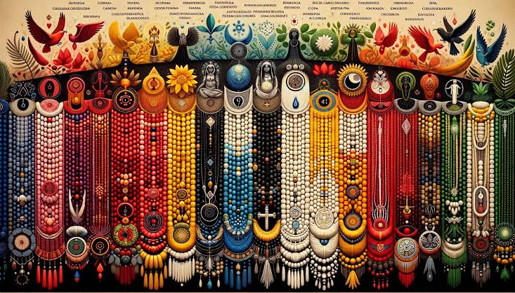

Intolerância religiosa é quando uma pessoa ou grupo demonstra hostilidade, preconceito ou discriminação contra indivíduos ou comunidades devido às suas crenças religiosas. Isso pode manifestar-se através de palavras ofensivas, violência física, exclusão social, restrições legais ou outras formas de discriminação baseadas na religião das pessoas afetadas.
De acordo com as denúncias, o tipo de violência mais praticado é a discriminação, com índices de 32%, seguido de depredação de templos e imagens, com 20%, e difamação, com 10,8%. Os maiores alvos são a religião do candomblé, com 30% e, a umbanda com 22%.Vivenciamos constantes ataques contra templos, profanação de imagens religiosas, ofensas contra pessoas e discriminação no tratamento em locais públicos e estabelecimentos privados. Em geral, as vítimas da intolerância religiosa no Brasil são adeptas de religiões de matriz africana, como o candomblé e a umbanda.
